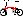

| Page last changed October 2, 2005 |  |
| Contents: |
|---|
| ___ | / _ \ | / / \ \ | \ \_/ / | \_|_/
| Wilfried Schmidt
Maschinenbau Aixer Strasse 27 72072 Tuebingen Germany Tel: +49 7071-38870 Fax: +49 7071-38876 |
| Speed km/h | Volts as percentage of rated output | |
|---|---|---|
| MIN | MAX | |
| 5 | 50% | 117% |
| 15 | 85% | 117% |
| 30 | 95% | 117% |
an alle InteressentInnen einer robusten Dynamo-Lichtanlage für das Brompton 27. September 1999 bromSON: der schmale, leichte, getriebelose Nabendynamo für die 70mm-Gabel Dynamos an Falträdern führen häufig zu Ärger: Ihre exponierte Lage läßt sie oft unbeabsichtigt verstellen oder führt zum Kabelabriß - abgesehen von den gewohnten Traktionsproblemen des Reibrades bei Nässe... Am Brompton-Faltrad ist die Montage eines Dynamos außerdem nur bei Verwendung des ansonsten kaum nutzbaren Gepäckträgers möglich. Gerade an Falträdern wären deshalb robuste Nabendynamos ideal. Leider waren diese bisher aber nur für Gabeln mit 100mm Weite erhältlich, was den aufwendigen und nicht unproblematischen Austausch der Gabel erfordern würde. Meine Erfahrung als Angestellter der Firma Schmidt Maschinenbau ermöglichte es mir, den bewährten SON Nabendynamo so zu modifizieren, daß er ohne Änderungen am Brompton montiert werden kann. Dieser bromSON unterscheidet sich vom alt bekannten SON hauptsächlich in der verringerten Breite der Achse und des Magnetrotors. Durch diese Maßnahmen konnte das Gewicht auf erfreuliche 450g gesenkt werden. Das gesamte Rad wird somit 50g leichter als ein mit einem Nordlicht Dynamo bestücktes Brompton. Die an einer 6V3W Lichtanlage erzeugte Spannung entspricht den Vorgaben der StVZO. Der erreichte Wirkungsgrad liegt bei etwa 55%. Der bromSON kann radial mit 28 130mm Speichen oder 2-fach gekreuzt mit den im Original-Vorderrad verbauten 150mm Speichen eingespeicht werden. Geschaltet wird der bromSON wie der SON an einem Lumotec mit integriertem Kippschalter am Gabelkopf. Wer auf ein Dynamo-Rücklicht verzichten mag, kann hier eine 6V3W-Halogenlampe verwenden. Die Modifikation des SON bedarf einiger Handarbeit und dürfte bei Produktion in nennenswerter Stückzahl einen Mehrpreis von mindestens 80DM erfordern. Sinnvoll könnte das Angebot komplett eingespeichter Laufräder zum schnellen Austausch sein, was mit weiteren 100DM zu Buche schlagen muß. Um überhaupt das Interesse für das Produkt abschätzen zu können, würde ich mich über entsprechende Rückmeldungen freuen. Mit freundlichen Grüßen Andreas Oehler
To all prospective customers for a durable Dynamo lighting system for the Brompton
27. September 1999
bromSON: the narrow, light, gearless hub direct current generator for the 70mm-fork Dynamos on folding bikes lead frequently to annoyance: Their exposed position lets it adjust often unintentionally or leads to cable damage - apart from the usual traction problems of the friction wheel on wet roads... On the Brompton the assembly of a direct current generator is additionally only possible by using the otherwise almost useless carrier. Especially on folding bikes durable hub direct current generators would therefore be ideal. Unfortunately they were available so far however only for forks with 100mm width, which would require the expensive and not unproblematic exchange of the fork. My experience as an employee of the company Schmidt mechanical engineering enabled me to modify the proven SON hub direct current generator in such a way that he can be installed without modifications to the Brompton. This bromSON differs from the old well-known SON mainly in the reduced width the axle and the magnet rotor. The weight could be lowered by these measures by a satisfying 450g. The entire bike becomes thus 50g lighter than a Brompton equipped with a Nordlicht direct current generator. The voltage produced at a 6V3W lighting system corresponds to the specifications of the StVZO. The achieved efficiency is approximately 55%. BromSON can be spoked radially with 28 130mm spokes or two-way crossed with the 150mm spokes blocked in the original front wheel. One switches bromSON like the SON at a Lumotec with integrated rocker switch at the yoke. Who may do without a direct current generator taillight, a 6V3W-Halogen lamp can use here. The modification of the SON requires some manual work and might require an additional price of at least 80DM with production in considerable number of items. The supply of completely spoked wheels for fast exchange, would be sensible, which would cost a further 100DM . In order to be able to measure at all the interest in the product, I would be pleased about appropriate responses.
With friendly greetings Andreas Oehler
| The Brompton Folding Bicycle FAQ |
{kind=link}